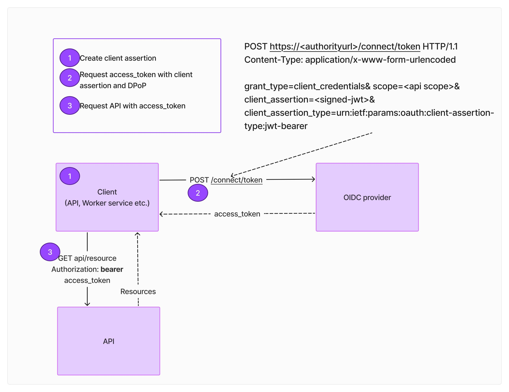
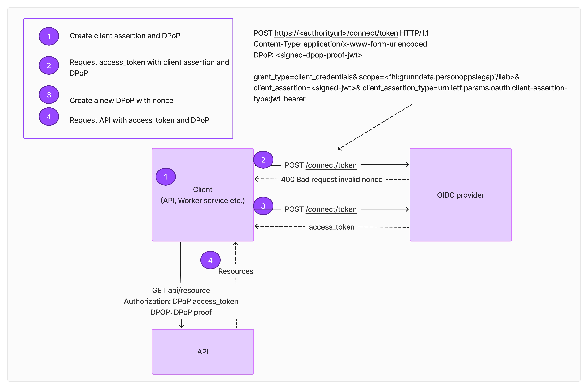

Manual client credential token request
Bearer token request flow
Below is sample of client credential request for bearer token. It sends a POST request to the token endpoint with the required parameters (grant_type, client_id, client_secret, and scope). The response contains the access token, which can be used to authenticate API requests.

Code Sample
DPoP request flow
Sample of DPoP request below 